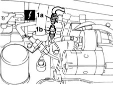

1084A42 engine oil pressure warning light switch - r + r
- Path
- Procedures > 10 ENGINE UNIT > 1084 ENGINE LUBRICATION SYSTEM > 1084A indicators/check devices > 1084A42 engine oil pressure warning light switch - r + r
- Kind
- repair procedure (removal / refitting; the operation number is the code)
- Applies to
- engines: 1.6 16v; all production periods
- Interactive page
- https://sloeber94.github.io/elrnDB-fMltpl/en/#/2891317
Applies to: engines: 1.6 16v; all production periods
 Removing
Removing
 Refitting
RefittingPlace the car on a ramp.
Disconnect the battery negative terminal.
Raise the car.
1. Disconnect electrical connection (1a), then undo and remove engine oil pressure warning light (1b).
 | Name | Connector |
|---|---|---|
1 | Brake fluid level sensor (switch) |

Applies to: engines: 1.6 16v; all production periods
Refitting
RemovingScrew in the engine oil pressure warning light.
Tighten the engine oil pressure warning light to torque.
 | Fastening | Component | Ø | Value (daNm) |
|---|---|---|---|---|
- | - | OIL PRESSURE W/L | M14 x 1.5 | 3.2 |
Lower the lift.
Connect the battery negative terminal.
Remove the vehicle from the lift.